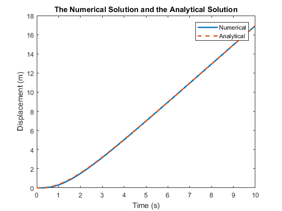
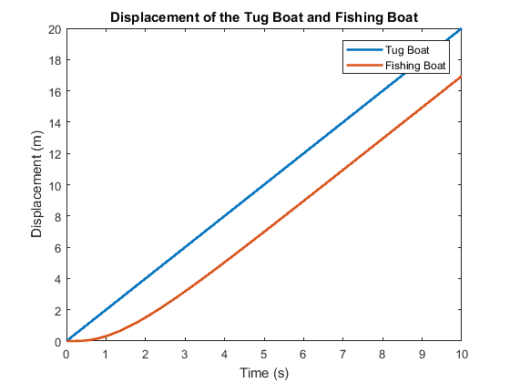
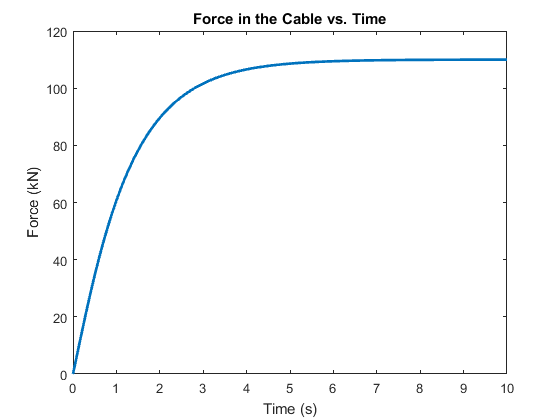
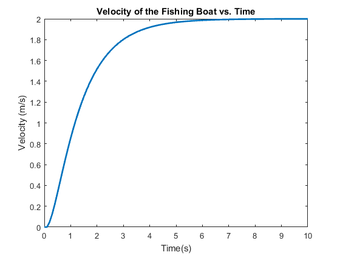

Rahul_Goyal_main Usage and Description
ME 326 Winter 2018 - Laboratory Assignment #1
Author: RAHUL GOYAL
California Polytechnic State University, San Luis Obispo, CA
Date Created: January 9, 2018
Date Modified: January 16, 2018
Description: Solves the boat problem using Euler's method.
Required Files:
- boatODE.m - ODE for the boat problem.
- EulerSolver.m - Solves ODEs using Euler's method.
Still To Do:
- Done!
Contents
Initial Conditions
ICs = [0, 0]; % Initial conditions func_hand = @boatODE; % ODE function t_f = 10; % Final time (s) t_step = 0.1; % Time step (s)
Simulating the Tugboat
[t, x_array] = EulerSolver(func_hand, t_f, ICs, t_step);
Plot Data Setup
The following sets up easy access to data for plotting.
time = 0:t_step:t_f; % Time (s) (x-axis) fb_x = x_array(:, 1); % Fishing boat displacement (m) fb_v = x_array(:, 2); % Fishing boat velocity (m/s)
Comparing the Numerical Solution to the Analytical Solution
The following graph comparing the numerical solution reached with Euler's method with the analytical solution suggests that the approach is a valid approximation; the plots line up almost exactly.
% Analytical fishing boat displacement (m) analytical = -3.0580 + 2*t + 3.3665*exp(-0.8520*t) - 0.3085*exp(-2.8147*t); % Plot plot(t, fb_x, t, analytical, '--', 'LineWidth', 2); title('The Numerical Solution and the Analytical Solution'); xlabel('Time (s)'); ylabel('Displacement (m)'); legend('Numerical', 'Analytical');
Displacement of the Tug Boat and Fishing Boat
The elongation of the tow cable as the system reaches steady-state is represented by the difference between the tug boat's displacement and the fishing boat's displacement (assuming that the tow cable is taut without stretching at t = 0 seconds). As the system reaches a steady-state, this value approaches 3.058 meters.
tb_v = 2; % Tug boat velocity (m/s) tb_x = tb_v * t; % Tug boat displacement (m) % Plot plot(time, tb_x, time, fb_x, 'LineWidth', 2); title('Displacement of the Tug Boat and Fishing Boat'); xlabel('Time (s)'); ylabel('Displacement (m)'); legend('Tug Boat', 'Fishing Boat');
Force in the Cable vs. Time
The maximum force in the cable approaches 110 kN. Because the values of this force are asymptotic, there is no specific time at which the force in the cable reaches its maximum. However, it does take approximately 5.5 seconds after t = 0 seconds for the force in the cable to reach 109 kN.
k = 1 / 0.0278; % Spring constant (kN/m) cable_x = tb_x - fb_x; % Cable elongation (m) cable_f = k * cable_x; % Force in cable (N) % Plot plot(time, cable_f, 'LineWidth', 2); title('Force in the Cable vs. Time'); xlabel('Time (s)'); ylabel('Force (kN)');
Velocity of the Fishing Boat vs. Time
% Plot plot(time, fb_v, 'LineWidth', 2); title('Velocity of the Fishing Boat vs. Time'); xlabel('Time(s)'); ylabel('Velocity (m/s)');